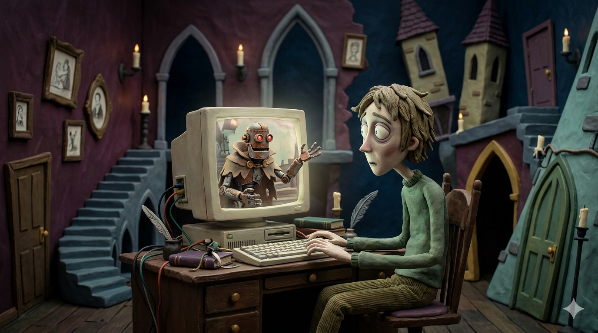
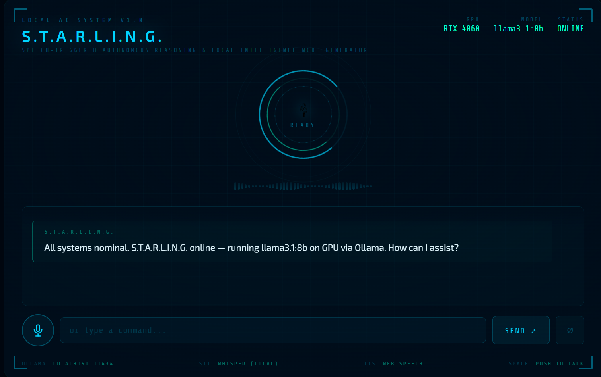
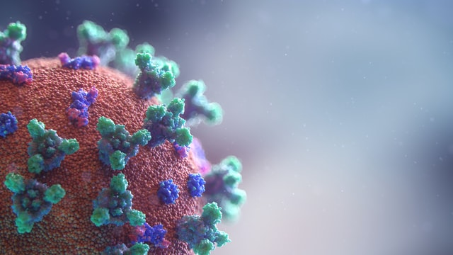

A selection of personal and academic projects — spanning local AI, interactive dashboards, computer vision, and web tools. Click any project to explore the details.
In Development

Personal Robot
A fully local, open-source robot built in progressive phases — from a conversational LLM (Phi-4-mini via Ollama) through RAG memory, voice I/O, computer vision (YOLOv8), and face recognition, to a self-contained physical robot on a Raspberry Pi 5. No cloud APIs.
Read More →
In Development

Personal Dungeon Master
A locally-run AI Dungeon Master powered by Ollama that guides players through D&D 5e adventures — with persistent memory via a knowledge graph, a seeded dice engine, and spoiler protection. No cloud APIs.
Read More →
In Development

STARLING — Local LLM Voice Interface
Voice-driven local LLM interface via Ollama — Whisper STT, Kokoro TTS, streaming responses, and an animated HUD overlay. Fully local, no cloud APIs required.
Read More →
Facial Recognition & Mask Detection
OpenCV identifies individual faces in an image, then feeds each cropped face into a Keras CNN built on ImageNet to classify whether the person is wearing a mask or not.
Read More →
Covid-19 Dashboard
Dash & Plotly web app tracking US Covid-19 cases and R-rate estimates by county, sourced from Johns Hopkins data. Cleaned with Pandas, R-rate calculated via EpiEstim in R, deployed on Google Cloud Platform.
Read More →
Music League Stats
An interactive web dashboard for competitive music leagues built with vanilla JS, D3.js, and Chart.js — featuring leaderboards, song stats, a fan chord map, trend analysis, economy breakdowns, and auto-generated round headlines. No backend required.
Read More →
In Development
Family Tree
An interactive family tree built as a standalone web page — visualising ancestry relationships with a collapsible D3.js node graph, biographical profiles, and full zoom and pan. All rendered client-side with no backend.
Read More →
Personal Budget Dashboard
Interactive personal finance dashboard tracking income, expenses, and savings with configurable categories and dynamic Chart.js visualisations — fully client-side, no backend, no data leaving the browser.
Read More →
Portfolio Website
This portfolio — built with vanilla HTML, CSS, and JS on GitHub Pages. Features a procedural star field canvas, scroll-reactive planet animation, hyperspace warp transitions between pages, and a fully responsive project showcase.
Read More →